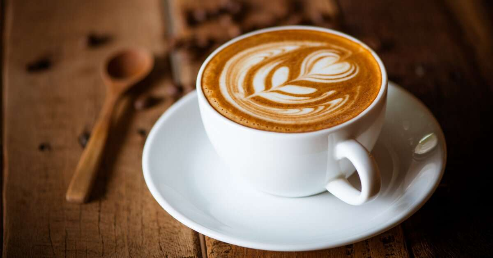
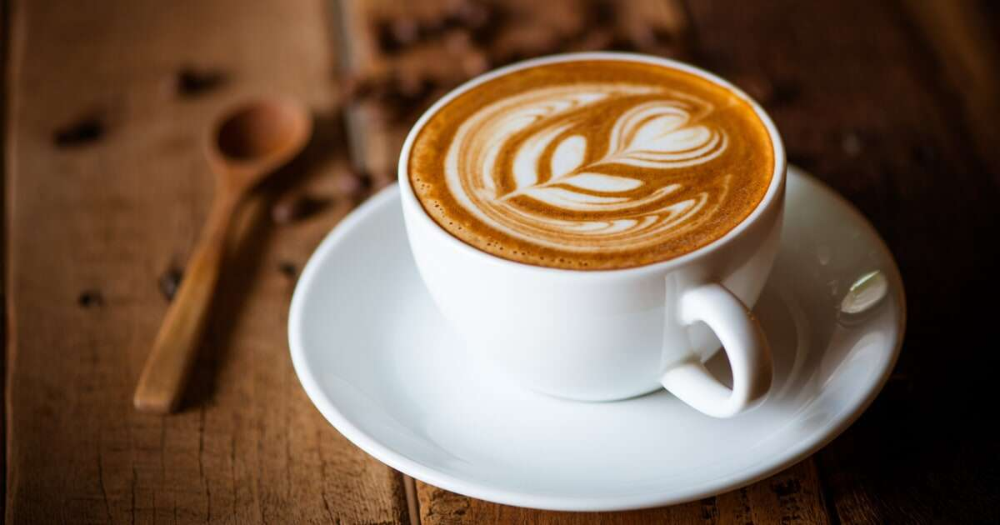

Dream of a perfect cup of coffee?

I've got you covered! Sign up to receive delicious recipes, brewing tips, and the latest updates from Your Dream Coffee delivered right to your inbox.
Everyone recognizes a roasted coffee bean, but you might not recognize an actual coffee plant. White flowers on coffee tree Coffee trees are pruned short to conserve their energy and aid in harvesting, but can grow to more than 30 feet (9 meters) high. Each tree is covered with green, waxy leaves growing opposite each other in pairs. Coffee cherries grow along the branches. Because it grows in a continuous cycle, it’s not unusual to see flowers, green fruit and ripe fruit simultaneously on a single tree. It takes nearly a year for a cherry to mature after first flowering, and about 5 years of growth to reach full fruit production. While coffee plants can live up to 100 years, they are generally the most productive between the ages of 7 and 20. Proper care can maintain and even increase their output over the years, depending on the variety. The average coffee tree produces 10 pounds of coffee cherry per year, or 2 pounds of green beans. All commercially grown coffee is from a region of the world called the Coffee Belt. The trees grow best in rich soil, with mild temperatures, frequent rain and shaded sun.
Coffee beans vary in their size, shape, color, and flavor depending on the region and conditions in which they were grown. The range of unique flavors and aromas between regional varietals is as expansive as the variety of wine available from different vineyards. It is well worth experimenting with different varietals to discover a bean perfect for your palate. Most regional varietals will fall into two main categories, Robusta or Arabica.
Arabica coffee is considered superior to Robusta because of its delicate flavor and low acidity. This variety is grown at higher altitudes and can be more difficult and costly to grow. These labor-intensive, low-yield plants produce a high-demand bean that sells for a higher price.
Robusta coffee tends to have a more acidic and harsh flavor than Arabica as well as higher levels of caffeine. Robusta can be grown at lower altitudes, in hotter climates, and with less moisture. Since Robusta has fewer growing restrictions and has a generally less desirable flavor.
Nescafe is one of the first few names that pop up in our heads when we think about coffee. It is a Swiss coffee brand founded in the year 1938 and is one of the largest brands for its parent company, Nestle. Nescafe distributes coffee in almost every corner of the world today and has a brand value of over $20.4 billion as of July 2020.
Bru is a brand that needs no introduction when we talk about Indian coffee. It was founded in the year 1968 and has been producing great quality coffee in the country ever since. Bru was one of the first Indian brands to add chicory to their instant coffee mix in order to enhance the aroma and flavour of their coffee, which was appreciated widely all over.
Combine luxury with Arabian coffee beans and you get Davidoff! Davidoff is one of the most influential luxury coffee brands in the world and has a massive clientele in India. Zino Davidoff Group is a Swiss family business that was founded in the year 1980 and deals in watches, leather goods, accessories, and fragrances.
Starbucks is an American multinational coffee chain which is headquartered in Seattle, Washington. It is one of the largest coffee chains in the world and has almost 33,000 stores across the globe. The brand generated a whopping $26.50 billion in the year 2019 and now also manufactures freshly roasted and aromatic coffee grounds that you can easily prepare at home.
if there’s any Indian brand that claims to get you the ‘farm to cup‘ coffee, it would be Blue Tokai. It was started by a couple from the South Indian region who missed the original filter coffee while living in Delhi. The brand was founded in the year 2012 and has its headquarters in Delhi, India.
I've got you covered! Sign up to receive delicious recipes, brewing tips, and the latest updates from Your Dream Coffee delivered right to your inbox.
 
